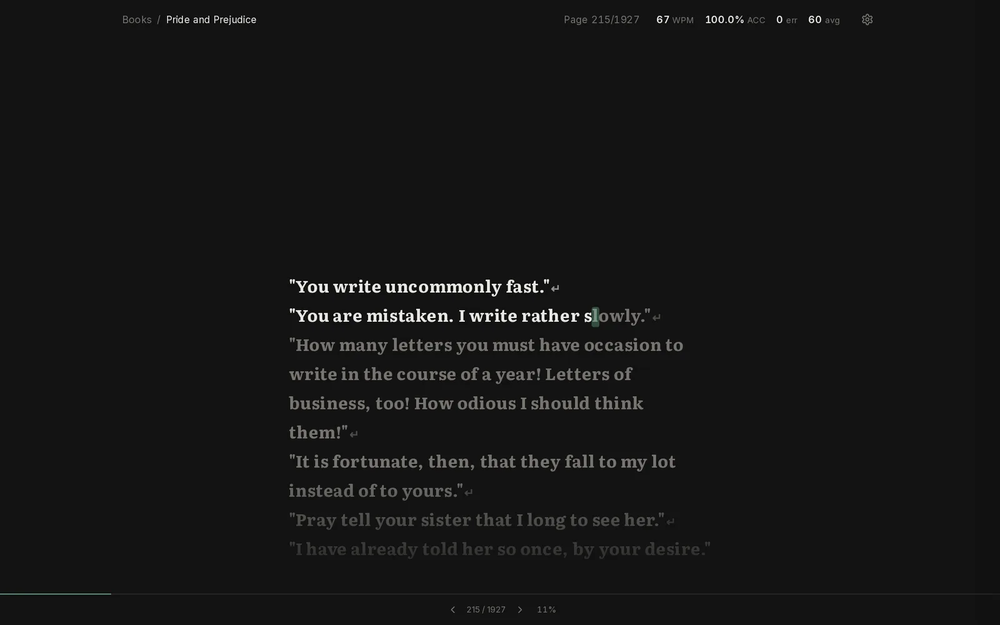
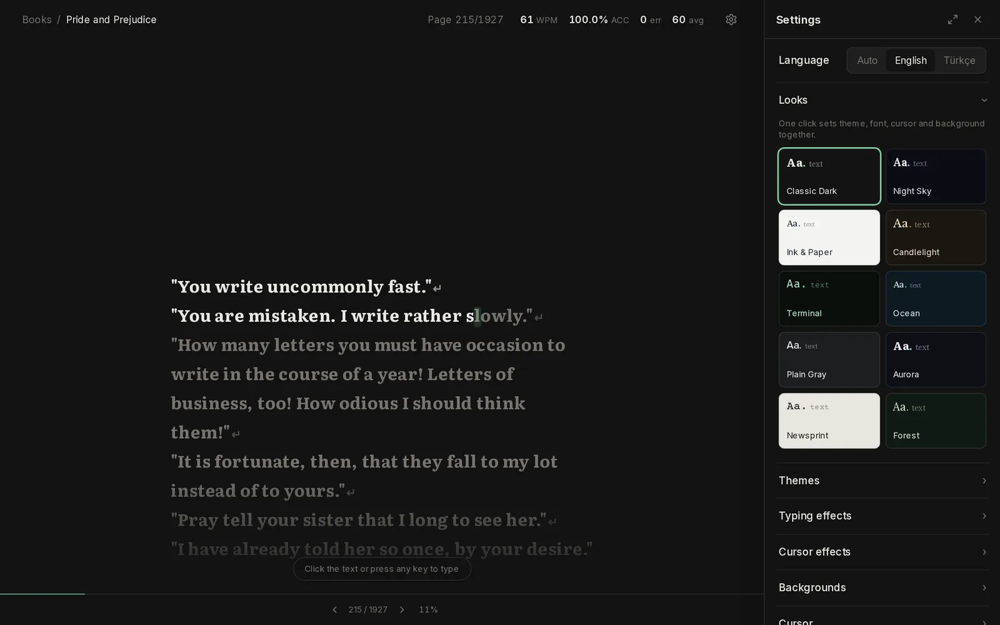
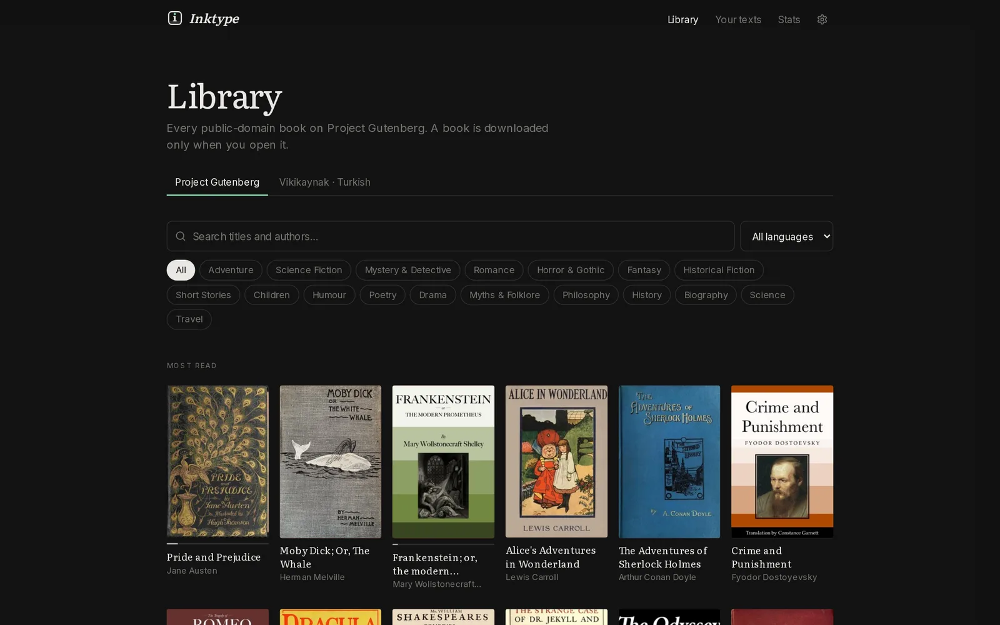
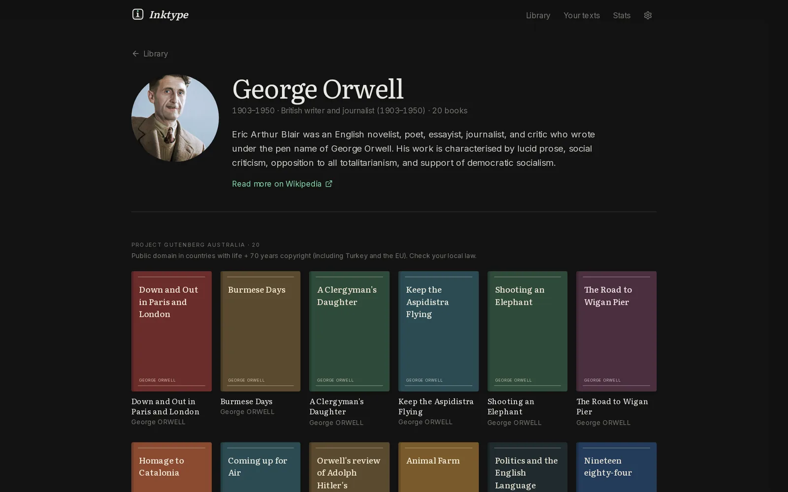
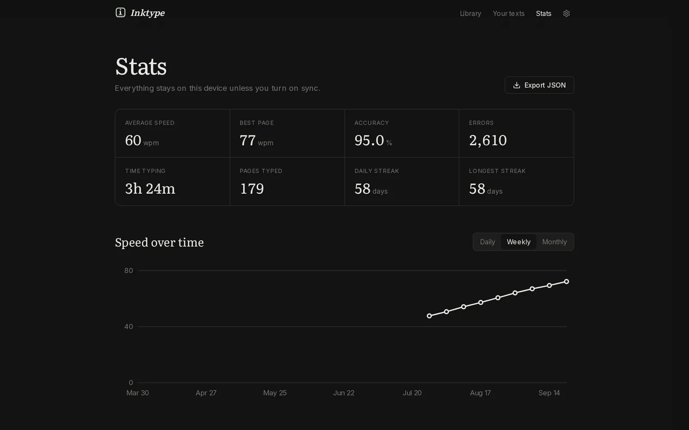

A careful typing engine
Mistakes inline in red, fix-before-continue or keep-going modes, the current line always centred, pages that turn themselves, idle time never counted.
Free & open-source typing practice
Type your way through the books you always meant to read.
Watching a demo — click to try it yourself
No accounts required · No ads · No tracking · MIT licence





Inspired by typelit.io, rebuilt from scratch as open source. Nothing is locked, nothing is metered.
Mistakes inline in red, fix-before-continue or keep-going modes, the current line always centred, pages that turn themselves, idle time never counted.
14 typing effects, 9 cursor trails and 10 animated backgrounds — Fireworks, Embers, Night Sky, Digital Rain, Hearth…
One click sets theme, font, cursor and background. Every theme is editable; fonts include Literata, Atkinson Hyperlegible and OpenDyslexic.
Live and average WPM, accuracy, streaks, weekly and monthly charts, a keyboard heatmap — exportable as JSON.
Progress lives in your browser. Install it as an app; books you've opened stay typeable offline. Optional sync on your own server.
The whole interface in English or Turkish, a Turkish Q on-screen keyboard, and search that understands titles in any language.
Paste an essay, a poem or your notes — or import any web page — and type through it page by page.
No analytics, no third-party requests from your browser: fonts, covers and books are served by your own Inktype server.
Every public-domain book, with covers, genres and languages.
Turkish literature — Ömer Seyfettin, Halit Ziya, Namık Kemal, Yunus Emre and more.
Classics like Animal Farm and Nineteen Eighty-Four, public domain in Turkey and the EU.
Titles resolve through Wikidata, so a Turkish title finds the original — and typing an author's name opens their profile.
Inktype is a single container with an SQLite file. Run it on a laptop, a Raspberry Pi or a small server.
$ git clone https://github.com/lunanoir21/inktype.git
$ cd inktype
$ docker compose up -d
# → http://localhost:3000$ pnpm install
$ cp apps/web/.env.example apps/web/.env
$ pnpm db:migrate
$ pnpm devNext.js 14 · TypeScript · Tailwind · Prisma + SQLite · Vitest · Playwright · MIT licence
Inktype was vibe-coded: the design, the typing engine, the libraries, the effects, the translations and the tests were all written together with an AI coding assistant (Claude Code), steered by a person who described what they wanted and reviewed every step.
It is covered by unit and end-to-end tests that run on every push, and it is open source — contributions from people and their assistants alike are welcome.
Read the code